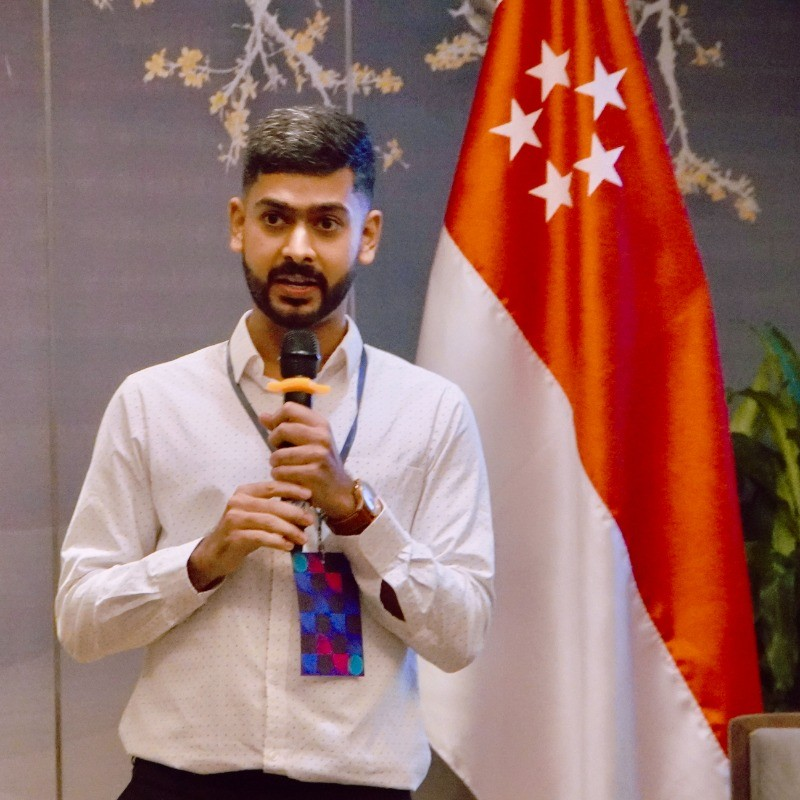

The creation of language technology resources for minoritised languages presents distinct challenges, but also offers opportunities that are not always available in high-resource language contexts. This presentation demonstrates how careful attention to linguistic, social, and technological context, combined with sustained collaboration with user communities, can shape the design and construction of NLP- and AI-enabled language resources for a minoritised language.
The talk showcases a range of recent interdisciplinary and cross-institutional projects involving applied and corpus linguists working closely with colleagues in NLP. It will include an overview of CorCenCC , the National Corpus of Contemporary Welsh, a large, richly annotated corpus that provides essential infrastructure for Welsh-language NLP, alongside a number of related projects.
These include Thesawrws, FreeTxt , a bilingual toolkit supporting the analysis and visualisation of free-text data, and other resources available through the GDC-WDG website . These resources support the exploration, analysis, learning, and referencing of Welsh.
The presentation will also profile ongoing work on machine-learning-based sentiment analysis, readability assessment, and CEFR-level prediction, as well as the development of a small, corpus-informed Welsh language model intended to provide a foundation for future AI research.
Together, these resources are underpinned by a corpus-led, context-aware approach to NLP and AI development. The presentation argues that this approach offers a transferable and sustainable template for research and resource-building in other minoritised and minority-language contexts, and explores its broader implications.

Transformers and Large Language Models (LLMs) have shown substantial improvements and extended capabilities over classic Natural Language Processing and Machine Learning techniques. This talk presents recent work from the UCREL centre at Lancaster University, demonstrating both the capabilities and limitations of modern AI across a range of disciplines.
Three case studies will be presented. The first explores how neural models improve the applicability of coarse-grained word sense disambiguation methods, originally developed for English, to low-resource languages in the PyMUSAS semantic tagger.
The second examines how LLMs can replicate and extend corpus analysis for research in the spatial humanities. The third investigates how well LLMs perform on subjective language analysis tasks, including metaphor, emotion, and sentiment analysis, using healthcare communications such as cancer narratives.
Together, these case studies illustrate both the strengths and current limitations of applying state-of-the-art AI methods across diverse research domains, highlighting where human expertise remains essential alongside increasingly capable language models.

Medical Artificial Intelligence (Medical AI) has achieved remarkable advances in high-resource settings. However, its real-world clinical impact in low-resource environments, particularly in developing countries, remains limited. This talk examines the unique challenges, opportunities, and practical solutions for developing efficient and deployable Medical AI systems under constraints of data availability, computational resources, and real-world clinical deployment.
Drawing on experience from large-scale medical imaging and digital health projects in Vietnam through the VinUni–Illinois Smart Health Center (VISHC), the talk analyses how data scarcity, label noise, domain shift, and infrastructure limitations fundamentally reshape model design, training strategies, and evaluation protocols. It discusses efficiency-driven approaches including data-centric learning, lightweight modelling, foundation model adaptation, weakly supervised learning, self-supervised learning, and deployment-aware optimisation.
Beyond algorithmic performance, the talk emphasises the importance of end-to-end system design, spanning data acquisition, integration into clinical workflows, and real-world robustness. It concludes by sharing lessons learned from deploying AI systems in hospitals with limited compute, connectivity, and technical support, while highlighting common pitfalls when transferring state-of-the-art methods from high-resource benchmarks to low-resource clinical practice.
Speaker Bio
Dr Pham Huy Hieu is Deputy Director of VinUniversity's Research Management Office, Assistant Professor in the College of Engineering and Computer Science, Director of the Computer Vision and Medical AI Lab (CVMAIL), and Principal Investigator at the VinUni–Illinois Smart Health Center. He received his PhD in Computer Science from the Toulouse Computer Science Research Institute (IRIT), University of Toulouse, France, in 2019.
His research focuses on artificial intelligence, computer vision, machine learning, medical image analysis, and smart healthcare. He has authored more than 100 peer-reviewed publications in leading journals and conferences, including Nature Scientific Data, Computer Vision and Image Understanding, Neurocomputing, IEEE Journal of Biomedical and Health Informatics, IEEE Transactions on Emerging Topics in Computing, PLOS ONE, MICCAI, MIDL, CVPR, ICCV, ICLR, and ICASSP, with nearly 3,000 citations on .
Since 2024, he has served on the Editorial Board of Scientific Data (Nature), as an Area Chair for MICCAI, and as a reviewer for leading journals including Nature Biomedical Engineering, IEEE Transactions on Medical Imaging, IEEE Journal of Biomedical and Health Informatics, and Communications Medicine (Nature).
Dr Hieu received the DAAD Fellowship in 2021 and the Global Leaders in Innovation Fellowship 2025 from the Royal Academy of Engineering. His team received the AI Award in 2022 for the VAIPE smart healthcare project. He was named Faculty of the Year in 2023, received the Rising Star in Research Award in 2024, and most recently received the National Outstanding Young Scientist Award in Science and Technology. He was also nominated for both the 10 Outstanding Young Faces of the Hanoi Capital 2024 and the Outstanding Young Faces of Vietnam 2024 in Science and Technology.

Medical translation is a high-impact yet under-explored challenge for low-resource languages such as Vietnamese. In clinical and medical education settings, inaccurate translation can create barriers to patient communication, medical training, and access to health information. This talk introduces the VinUniversity Vietnamese-English Medical Translation Project, a cross-disciplinary effort between AI and health sciences researchers to build robust language technologies for Vietnamese medical contexts.
The talk will present two current core contributions of the project. First, it introduces MedEV, a high-quality Vietnamese-English parallel dataset for medical machine translation containing approximately 360,000 sentence pairs, together with benchmarking results across commercial systems, large language models, and neural machine translation models.
Second, it discusses ViMedCSS, a 34-hour Vietnamese medical code-switching speech dataset designed to address a common real-world phenomenon: Vietnamese medical speech frequently includes English medical terms, drug names, and procedures. This creates substantial challenges for automatic speech recognition and downstream speech translation systems.
Beyond datasets and benchmarks, the project aims to develop practical medical AI systems, including a real-time Vietnamese-English medical speech translation prototype. The talk will cover the research motivation, dataset construction process, model adaptation strategies, evaluation findings, and wider implications for low-resource medical NLP, multilingual healthcare communication, and AI-enabled clinical education.
Artificial intelligence is reshaping healthcare, but its value depends less on algorithmic performance than on a deep understanding of clinical practice, patient needs, and human behavior. This talk presents an interdisciplinary perspective on building human-centered AI systems for patient care.
Drawing on research in women's health, digital health, and mental health, it shows how AI can support symptom prediction, personalized care, and patient engagement — illustrated through an AI model predicting symptoms in women with breast cancer, and a large-scale analysis of insomnia, anxiety, and depression across a merged dataset of over 3,000 patients. The talk then turns to a parallel effort developing empathetic large language models for mental health support, grounded in behavioral psychology frameworks (CBT, ACT, RFT).
Finally, it addresses key challenges — data quality, research ethics, clinical validation, trustworthiness — and explores opportunities for collaboration between healthcare researchers and AI scientists.

Artificial intelligence (AI) is increasingly being deployed in healthcare, yet organisations consistently struggle to ensure that AI-enabled care delivery reflects compassion, defined as sensitivity to patient suffering and a commitment to relieve it, which remains central to effective care. While previous research has focused on algorithmic performance and clinical outcomes, far less attention has been paid to how compassion can be systematically embedded and sustained within AI-enabled healthcare processes.
Drawing on 70 interviews with patients using AI-enabled self-tracking systems, National Health Service (NHS) clinicians involved in technology-mediated care pathways, and senior Roche stakeholders responsible for the design and governance of AI-enabled digital health systems, this study develops the Procedural Compassion in AI (PCA) framework.
The analysis identifies three interdependent operational capabilities, translational alignment, responsive mediation, and sustained governance, which together explain how compassion is either embedded or eroded throughout the AI-enabled care delivery lifecycle. The findings further demonstrate that compassion failures arise not simply from algorithmic limitations or individual intent, but from misalignments across these operational capabilities that prevent compassionate intent from being translated into effective escalation pathways and accountability structures.
The talk concludes by discussing the implications for managers and healthcare organisations seeking to embed compassion into AI-enabled care delivery while maintaining efficiency, scalability, and operational effectiveness.

This talk explores how firms' orientation towards employee well-being influences the health-related behaviour of their workforce. Because a firm's commitment to well-being is not directly observable, the study measures it through the language used in Danish companies' public disclosures, applying language models to construct a firm-level well-being salience score.
The well-being score is linked to nationwide administrative registers covering health outcomes and sickness absence between 2013 and 2022. By exploiting workers' mobility between firms, the study estimates how employee health behaviour changes when individuals move to employers with different levels of well-being salience.
The findings reveal a notable asymmetry. Workers moving to firms with higher well-being salience take significantly more sickness absence, while their use of mental health services remains unchanged. Since a genuine deterioration in health would be expected to increase both measures, the evidence suggests that the observed increase in absence reflects changes in behaviour rather than worsening health.
The results demonstrate that organisations influence not only worker health but also how employees respond to it. More broadly, the study highlights how the language of routine corporate disclosures can be analysed using NLP to uncover economically meaningful characteristics of workplaces that are not captured in traditional administrative data.

Artificial intelligence has become a global strategic priority, yet many organisations continue to struggle to translate AI investments into enterprise-wide transformation. Drawing on findings from the State of AI in Vietnam 2026 study and executive insights from one of Vietnam's leading AI-driven organisations, this talk introduces the concept of the AI Maturity Trap, a framework explaining why organisations often stall between AI experimentation and meaningful business transformation.
Using Vietnam as an emerging-market case study, the talk examines three evolving bottlenecks that influence AI success: technical capabilities, operational integration, and Strategic Orchestration. Together, these dimensions provide a practical perspective on why successful pilot projects do not always translate into organisation-wide impact.
The session will offer practical insights into identifying these organisational constraints and discuss the leadership, governance, and operational capabilities required to move beyond isolated AI initiatives. It will also highlight how emerging markets can provide valuable lessons for organisations worldwide seeking to realise sustainable business value from AI.

AI has turned digital fraud into something fast, cheap, and frighteningly convincing. What once took hours in Photoshop can now be generated in seconds by image and video models, allowing fraudsters to run thousands of iterations against identity verification systems until one gets through.
This talk traces how digital fraud has evolved over the last few years and examines why AI now sits on both sides of the fight.
Drawing on experience building KYC and fraud detection solutions across Southeast Asia, the Middle East, and Africa, Varun will explain why no single defence can withstand a threat that continues to become more sophisticated, and why only a multi-pronged approach stands a chance.
Large language models are changing how legal information is searched, analysed, and communicated. However, Legal AI requires more than generating fluent and convincing answers. Legal applications must operate with reliable sources, structured reasoning, explainability, privacy safeguards, human oversight, and clearly defined accountability.
This talk provides a broad overview of Legal AI, from legal information retrieval and question answering to retrieval-augmented generation, legal reasoning, and neuro-symbolic AI. It discusses what current language models can do, where they remain unreliable, and why legal hallucination, outdated knowledge, jurisdictional differences, and evaluation remain important challenges.
It concludes with a practical vision for trustworthy legal decision-support systems, where language models work together with verified legal sources, explicit reasoning mechanisms, validation processes, and appropriate human judgement.

Artificial Intelligence (AI) and advanced automation are fundamentally reshaping the materials discovery pipeline, enabling a seamless transition from data-driven property prediction to sophisticated structural and process optimisation. This talk presents three complementary examples developed at VinUniversity that accelerate every stage of discovery, from automated literature mining to inverse design.
The presentation begins with AI-powered text mining for synthesising scientific literature, creating high-quality datasets that support environmentally sustainable "green" synthesis through interdisciplinary collaboration with Prof. Le Duy Dung. It then introduces advanced computer vision approaches, including EfficientNet and CLIP, for automated classification of experimental images, delivering strong performance even in few-shot settings.
These capabilities are integrated into the Algorithmic Interactive Reticular Synthesis (AIRES) platform, co-developed with Prof. Omar Yaghi at UC Berkeley. AIRES combines probabilistic models, including Random Forests and Gaussian Processes, to predict crystallisation outcomes for complex framework materials, achieving approximately a twofold acceleration compared with conventional unguided exploration.
The talk concludes by exploring the next generation of inverse materials design through generative AI. By embedding material structures into continuous latent spaces and applying multi-objective Bayesian optimisation, the framework balances manufacturability with key performance metrics such as stiffness and density. Combined with advances in multimaterial fibre engineering and on-fibre neuromorphic computing, this research illustrates how generative AI is enabling the development of intelligent, multifunctional materials for wearable technologies and infrastructure-integrated sensing systems.
The presentation will conclude with a discussion of future opportunities for interdisciplinary collaboration and industrial partnerships aimed at translating these advances into practical technologies with broad societal impact.

The rapid growth of Low Earth Orbit (LEO) satellite constellations is creating new opportunities to process data and run artificial intelligence applications directly in space. However, satellite computing remains constrained by limited energy, intermittent connectivity, heterogeneous resources, and the difficulty of coordinating satellites across different orbital planes and service providers. This talk presents recent work on Collaborative Orbital Edge Intelligence (COEI), a decentralized paradigm in which satellites collaboratively perform sensing, communication, and computation tasks without relying on a central controller.
COEI enables the formation of a multi-party, multi-orbit computing infrastructure in which satellites make decisions using local information and share resources across heterogeneous constellations. The presentation will discuss the COEI architecture and its interconnected challenges in networking, computing, and power management, including dynamic routing, computation offloading, service migration, energy harvesting, battery-aware scheduling, security, privacy, and incentive design.
The talk will also present research on decentralised energy-aware satellite task offloading, where satellites iteratively offload tasks across multiple hops while accounting for stochastic workloads, sunlight availability, battery dynamics, and resource constraints. Beyond task offloading, the session will highlight broader research opportunities in joint communication-computation scheduling, reliable service migration, trustworthy multi-operator collaboration, and integration with future 5G/6G networks.
These directions are important for enabling resilient, energy-efficient, and trustworthy intelligence at the space edge.